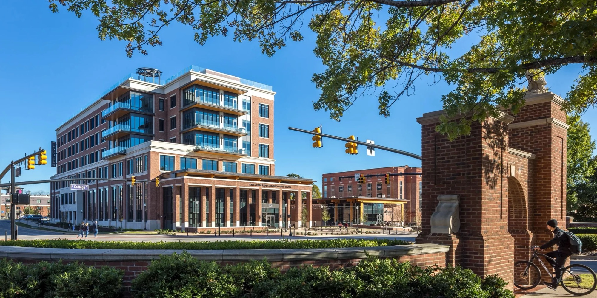
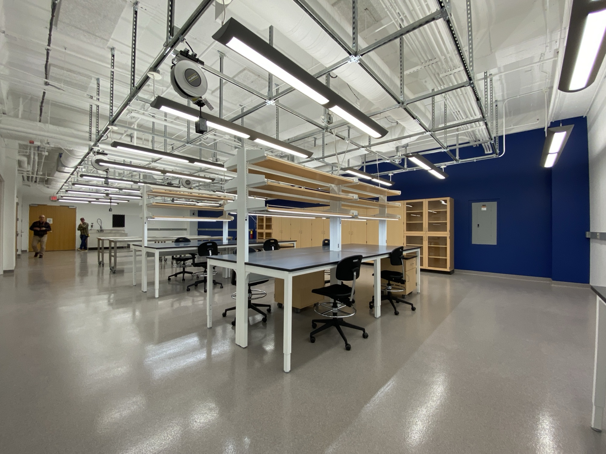

Laboratory architecture
built on precision.
Whitecap Architecture is a one-stop shop of small scale full lab design services for universities, medical facilities, and corporate research teams — from feasibility through construction administration.
Offerings
From Feasibility to Construction
01
Programming
Programming and space planning for wet labs, dry labs, and shared core facilities. Asking the big questions early.
02
Lab Planning
Interpreting the lab program and end users' needs into layouts, specifications, and renderings to communicate needs.
03
Full Architectural Services
Providing full detailed design through construction administration is available.
Selected Work
A sample of recent work



Starting a project?
Feasibility study to full fit up — let's talk specifics.